Heroes
HeroesHeroes: whom to level and how to get them
The main beginner mistake is leveling everyone a little. Pick the 5 heroes of your first squad and invest in them. A fully leveled average hero is stronger than a half-leveled best one.

Arthur — free
The main tank. The first 50 recruits in the Tavern are guaranteed to give Arthur.

Marlena — paid
The best damage early on. Given for your first purchase in the game — the first top-up pack (about $1).

Level 5, not everyone
All resources go into the heroes of your first squad. Don't touch the rest until the first squad is strong.
Hero day
Save Antitoxin, shards, Skill Badges and recruit tickets all week and spend them on Thursday.
Heroes in 3D
Rotate the hero with the mouse or a finger, zoom with the wheel. The buttons under the model play animations from the game: idle, attack, skill, walk, run, stun, death. Tap a portrait on the right or any hero portrait below — their model opens. All other game models are on the «Models» page.
How a hero works
Every hero has three main «labels»: rarity (color), role (what they do in battle) and faction (their «team»). Plus level, stars, skills and gear.
Rarity — the frame color
- UR Gold — the strongest
- SSR Purple — average
- SR Blue — weak, we don't level them
The rarer the hero, the higher their power ceiling.

Role — what they do in battle
- Tank — lots of HP, takes the hits, stands in front
 Damage — lots of attack, little HP, stands behind
Damage — lots of attack, little HP, stands behind Support — buffs allies, weakens enemies, stands behind
Support — buffs allies, weakens enemies, stands behind
The role icon is in the hero window next to the name.

Faction — their «team»
- Warriors
- Rangers
 Warlocks
Warlocks
Each is stronger than one of the other two — like «rock, paper, scissors» (diagram below).
WarriorWarlockWarriorHow to get each hero
New heroes don't appear right away, but on a certain day of the server's life. Many are first sold for money or spun in the Roulette, and later move to regular Tavern recruiting, where you can get them for free. Days are approximate: ±1–2 days on different servers.
| Hero | When it appears | How to get |
|---|---|---|
| Arthur UR Warrior, tank | from day 1 | Free. He used to be paid, then moved to regular recruiting. The first 50 Tavern recruits guarantee Arthur, after that — 10 of his shards for every 50 recruits. |
| Marlena UR Warrior, damage | from day 1 | Paid: for your first purchase in the game (the first top-up pack, about $1). After that her shards are sold in daily offers. Around day 66 she appears in the Tavern. |
 Bella SSR Warrior, tank Bella SSR Warrior, tank | from the start | Free: her shards are sold in the Alliance Shop for Alliance Coins. |
 Claire, Claire,  Celia, Celia, 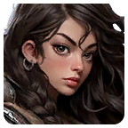 Sivir SSR Warriors | from day 1 | Free, given at the start. In the Era of Revival Claire can be upgraded to gold (UR). |
 Cynthia UR Ranger, damage Cynthia UR Ranger, damage | from day 8 | In the Roulette (the wheel): free spins every day, at the end of the event spin with crystals up to the guaranteed drop. Later mostly for money. Around day 66 — in the Tavern. |
 Shadow UR Ranger, tank Shadow UR Ranger, tank | from day 8 | Paid: a pass for about $20. Around day 66 — in the Tavern. |
 Joker, Joker,  Annie UR Warlocks Annie UR Warlocks | from day 15 | In the Roulette. They only shine at 9–10 stars — free players should skip them. Around day 66 — in the Tavern. |
 Harper UR Warrior, support Harper UR Warrior, support | from day 22 | First paid (130 shards for about $20), shards also come from the Covert Operations Treasure Map. From day 31 — in regular recruiting in the Tavern, for free. |
 Daskal UR Warrior, tank Daskal UR Warrior, tank | from day 29 | First paid. In the Era of Revival he became available for free in the Tavern. |
 Red Lady UR Ranger, damage Red Lady UR Ranger, damage | from day 36 | First on sale. In the Era of Revival she became available for free in the Tavern. |
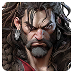 Ulfrid (Brian) UR Warlock, tank | from day 43 | Paid. Reflects part of the damage back at the attacker. |
 Zoya UR Warrior, damage Zoya UR Warrior, damage | from day 57 | Paid. Boosts Marlena's damage. |
 Louis UR Ranger, tank Louis UR Ranger, tank | from day 64 | Through a pass. The toughest tank in the game. |
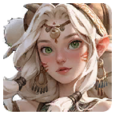 Bell UR Ranger, support | from day 71 | Paid. «Harper for Rangers». |
 Billy, Billy,  Nicole UR Warlocks Nicole UR Warlocks | from day 85 / 99 | Paid. Needed for a full Warlock squad. |
 Grenwald Grenwald Stellar Stellar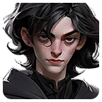 Hastar Griffith Griffith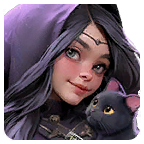 Bestar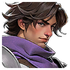 Lucius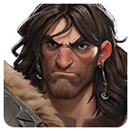 Kesso Ash Ash | from the start | Free: Tavern recruiting, events, shops. Universal purple shards can replace missing shards. |
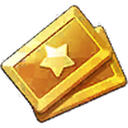
Tavern recruiting. A recruit ticket costs 398 Diamonds. Each recruit has a free attempt on a timer. The 50th recruit is guaranteed to give 10 shards of a gold hero.

The Alliance Shop refreshes every Monday: it has gold shards and Bella shards. Check it every week.
Universal shards fit any hero of their color. Don't spend them on the first hero you see — keep them for your main hero.
Hero ranking
S — the best, C — weak. The plate color under the name is the rarity: UR gold, SSR purple, SR blue.
Why Celia is at the bottom. Her skills work against monsters and for gathering (more damage to Blight, up to +40% gathering), while in fights with players she adds almost nothing. So she ranks low «for battle», but she is useful in an anti-Blight squad and for gathering — see «Main heroes» below. Same with Claire: low for battle, but strong against monsters.
S The best
A+ Very strong
A Strong
B+ B C Temporary and weak


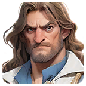
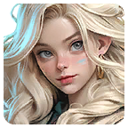
Ready-made paths: whom to play with and when to swap heroes
A «temporary hero» is one you use now and later replace with a stronger one. Don't put many Skill Badges into such a hero: skills at level 8–10 are enough.
| When | Tanks (front) | Damage and support (back) |
|---|---|---|
| Days 1–7 | Arthur · Bella | Claire · Celia (temporary) · Sivir (temporary) |
| Days 8–30 | Arthur · Bella | Claire · Celia · best purple hero |
| From day 31 | Arthur · Bella | Claire · Celia · Harper (arrived in the Tavern) |
| Later | Arthur · Daskal (free in the Tavern after the Era of Revival) | Marlena (once she appears in the Tavern) · Claire · Harper |
Bella is a long-term second tank: she ranks higher than Lucius (A+ vs B+), and her shards are sold for free in the Alliance Shop. She is only replaced by a gold tank — Daskal. Lucius is a backup tank if you don't have Bella yet.
How to save up for Marlena for free, simply. Marlena appears in the Tavern around day 66. To make her strong right away you need about 975 gold shards. So: don't spend all the gold universal shards you get. Put half into Arthur and Harper, set half aside. When Marlena appears, put the savings into her.
| When | Tanks (front) | Damage and support (back) |
|---|---|---|
| Days 1–7 | Arthur · Bella | Marlena · Claire · Celia |
| From day 31 | Arthur · Bella | Marlena · Harper · Claire |
| Later | Arthur · Daskal | Marlena · Harper · Red Lady or Claire |
All gold shards go first to Marlena, up to 10 stars. Raise Harper to 8 stars once Marlena is at 10: he unlocks a skill that speeds up the whole squad's skills by 10%.
Players who spend more advise switching to Rangers already in mid-game: by the end they are stronger than Warriors even against fully leveled Warriors.
| Lineup | Heroes |
|---|---|
| Days 8–30 | Arthur · Shadow · Marlena · Claire · Cynthia |
| Full Ranger squad | Louis · Shadow · Cynthia · Bell · Red Lady |
| Then — Warlocks | Ulfrid · Billy · Annie · Nicole · Joker |
Pick one faction and don't jump between them: spreading resources across three squads is the slowest path.
How to upgrade a hero: 4 things
All of this is in the hero window: on the main screen, the Hero button at the bottom left → tap the hero you need.
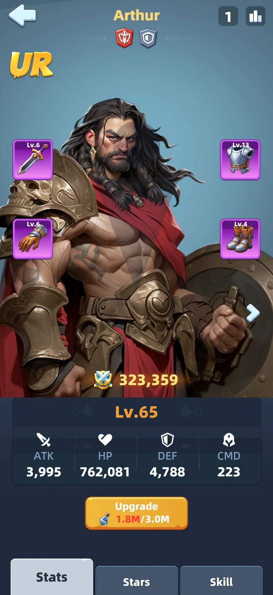
The hero window. Frames: gear, «Upgrade», «Stars» and «Skill».

1. Level
The Upgrade button under the stats. Leveled with Antitoxin — the button shows how much you have and how much you need (a red number — not enough). Gives attack, HP, defense and CMD. The level cap depends on the Sanctuary: Sanctuary 20 — hero up to level 100, Sanctuary 30 — up to 150.
2. Stars
The Stars tab at the bottom of the window. Leveled with this hero's shards  (the picture with their face) or universal ones. Stars unlock new skills and raise power a lot. After the 4th star a hero gets noticeably tougher.
(the picture with their face) or universal ones. Stars unlock new skills and raise power a lot. After the 4th star a hero gets noticeably tougher.
3. Skills
The Skill tab at the bottom of the window. Leveled with Skill Badges  . They raise skill numbers: damage, shields, buffs. Badges are always scarce — the main damage hero comes first.
. They raise skill numbers: damage, shields, buffs. Badges are always scarce — the main damage hero comes first.

4. Gear
Four slots on the sides of the hero: on the left the sword and gauntlets, on the right the armor and boots. A gray slot with a silhouette means nothing is equipped — tap it to equip. Details — in the Gear section.
The order — step by step
There is a huge difference between 9 and 10 stars: at 10 all their skills become maxed. The other heroes of the squad only need 8 stars. Note: the road from 0 to 8 stars costs about as much as from 8 to 10.
Except the first skill of tanks and supports: it is their basic attack, damage doesn't matter for them.
Then support, then tanks (for tanks — defensive skills, not attack). For purple heroes don't level anti-monster skills, except Claire and Celia.
Save shards, badges, Antitoxin and recruit tickets since last Thursday and spend them on the Duel's hero day. Antitoxin — in the «Enhance Hero» round of the Survival Battle.

Awaken. Marlena, Cynthia and Annie can be «awakened» after 10 stars with special shards: stats and skills grow. Daskal, Louis and Ulfrid got their own weapons, which boost them too.
Where to get Antitoxin


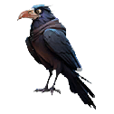


Main heroes — short and clear
These are not «the best by ranking», but the heroes most often leveled at the start: you can get them for free or in the first days (Arthur, Bella, Claire, Celia — from the first days; Harper — in the Tavern from day 31; Marlena and Cynthia — for purchases), and the squads from the «Squads» section are built on them. Each one says why you take them.
Arthur — the main tank
Reduces damage to all tanks in the squad, shields himself, and his main strike hits everyone nearby and reduces damage to allies. Goes in slot 1 — that is where hits are strongest. The first hero to invest in.
Marlena — the main damage
The strongest damage at the start. Deals area energy damage, boosts it herself and recharges skills faster. Good both against players and against monsters.
Harper — Warrior buffs
Raises attack for all heroes of the squad and separately for all Warriors. Next to Arthur and Marlena — a huge boost. From day 31 free in the Tavern.
Bella — a free tank
Shards — in the Alliance Shop. Reduces monster damage to allies, her strike weakens enemies' attack. Temporary: later she is replaced by Lucius or Daskal.
Claire — against monsters
Adds about 15% damage to monsters for the three strongest Warriors in the squad. Irreplaceable on the Demon King. Can be upgraded to gold (UR) in the Era of Revival.
Celia — more resources
Given at the start. Adds damage to monsters and up to 40% resources from resource and elite monsters. Temporary.
Cynthia — Ranger damage
Hits all enemies in an area and raises her own crit rate. For a free-to-play Ranger she is the best choice for the Demon King.
Daskal — the second Warrior tank
Shields the whole squad and heals himself. Together with Harper the squad lives much longer. Give him a sword and gauntlets right away — his healing depends on attack.
Grenwald — damage without gold
The best purple hero for damage, especially against monsters. Fragile himself — only behind a tank. A replacement for Marlena if you don't have her.
How not to waste resources
Five heroes at 50% are weaker than three at 100%. First squad first.
If you have Marlena — almost all universal gold shards go to her first, up to 10 stars.
For Bella, Sivir and Celia, skills at level 8–10 are enough.
Level defensive skills and shields for tanks: they win by surviving, not by hitting.
On Thursday the same shards would have given Duel points.
The first levels build in seconds. Diamonds — for recruiting heroes.